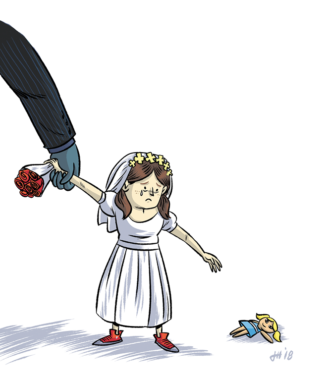

Child Marriage is harmful both emotionally and physically

Child marriage is a form of gender-based violence.
Girls married before the age of 18 are at an increased risk of facing physical and mental abuse. The greater the age difference is between a girl and her husband, the
higher the chance it is that she will face sexual violence. According to a 2017 report from the Tahirih Justice Center, studies show that US women who married as children
face higher rates of psychiatric disorders and are more likely to receive health aid. Women who are married as children are also more likely to go through serious medical
problems.
Child marriage strips girls of their education:
Girls who marry as children are 50% more likely to drop out of school and four times less likely to graduate college. A child bride's education will be cut down
after marriage, and because of this, her work opportunities are limited. The wide gender gap in education and the workforce is a consequence of the limited education
and work opportunities that come with child marriage.
Child marriage traps girls in a chain of poverty:
Marrying before the age of 18 traps child brides in a cycle of poverty. Between 70-80% of marriages before the age of 18 ends in divorce, and according to a 2017
report from the Tahirih Justice Center, for teen mothers, getting married young and then divorcing can more than double the chance of living in poverty. Early marriage
can disrupt or discontinue a girl's education and therefore limit her job opportunities ( which affects the gender balance in colleges and the workforce.) and gives a
woman who marries young a higher chance of living in poverty when she is older than her counterparts who marry as adults.
Early pregnancy has devestating consequences for girls
Child marriage is one of the driving causes of early and teenage pregnancy. 90% of teen girls who give birth are already married. Early pregnancy has many negative
effects on girls. A girl's body is not physically ready to give birth, and childbearing can result in depression, miscarriage, and postpartum depression. Not only is
the mother affected in early childbirth, but the child of a young mother is at an elevated risk of infant mortality and stillbirth.